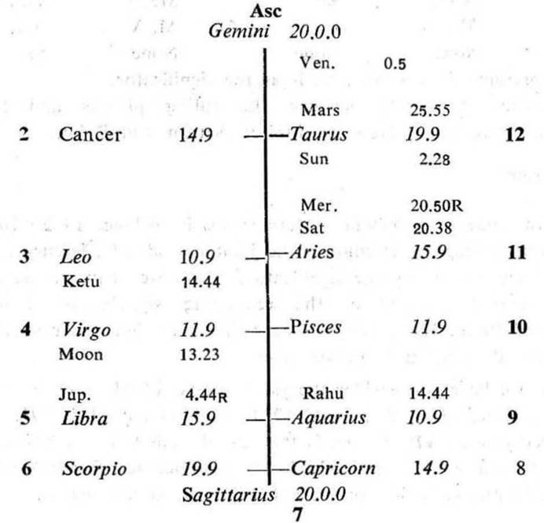

Question. When shall I be able to go to America for studies?
Number. 56 (out of 249)
Place of Judgment. 23°N 2', 72°E 35'.
Time of Judgment. 17-5-1970, Sunday; 8-30 A.M. I.S.T.

If the cuspal sub lord of the 12th be the significator of 3, 9 or 12 the foreign travel is promised during the joint period of the significators of 3, 9 and 12.
In this horary map the sub lord of Moon (Rahu) occupies the 9th. Thus Moon in 4 shows that the query refers to the foreign travel and studies.
12th Cusp. The sub lord of the 12th cusp is Mercury. It is retrograde, but it gets direct in motion from 22-5-1970 and crosses Aries 29° 9' the point from where it turned retrograde, on 7-6-1970. Its star lord Venus is direct in motion, it owns and occupies the 12th. So Mercury is the significator of 12. Hence the foreign travel is promised and the querent will go abroad after 7-6-1970 as the cuspal sub lord Mercury is a fast moving planet.
11th Cusp. The sub lord of the 11th cusp is Venus. It is direct in motion. It occupies the 12th. Its star lord Mars is direct in motion, it owns 11 and occupies 12. So Venus is the significator of 11 and 12. Hence the querent’s desire to go abroad will be fulfilled soon because Venus is also a fast moving planet.
At the time of judgment (Moon Dasha balance 7Y 5M 16D) the querent is running the joint period of Moon, Rahu and Venus. This period continues upto 20-6-1970.
The querent desires to go to America for higher studies. So the joint period rulers at the time of judgment should be the significators of 3, 9, 12 and they should be connected with 4, 9 and 11. If so, the querent will be able to go abroad for studies.
The period ruler Moon is in its own star(Moon) in 4 and in the sub Rahu in 9 (Rahu in Aquarius represents Saturn owning 9 and occupying 11; it being aspected represents Jupiter in 4). So Moon is the significator of 4 and connected with 4, 9 and 11.
The sub period ruler Rahu is in its own star (Rahu) in 9 and in the sub Ketu in 3. So Rahu is the significator of 9 and connected with 3 and also with 4 and 11 as discussed above.
The inter period ruler Venus is in the star Mars owning 11 and occupying 12 and in the sub Mercury owning 4 and occupying 11. So Venus is the significator of 11, 12 and connected with 4 and 11.
Thus the joint period rulers at the time of judgment are the significators of foreign travel and also of higher studies. So the querent will go abroad after 7-6-1970 and before 20-6-1970 during this very joint period of Moon, Rahu and Venus, when the transit agrees.
Actually he started for America by aeroplane on 10-6-1970 at 1-0 A. M. I. S. T. At that time Sun was transitting in Taurus 25° 12′ in the sub Rahu (the sub period ruler); Moon in Cancer in its own sign; Rahu in Aquarius 13° 7′ in its own star; Venus in Gemini 28° 28′ in the sub Venus (the inter period ruler).